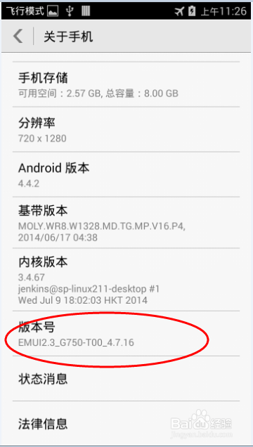
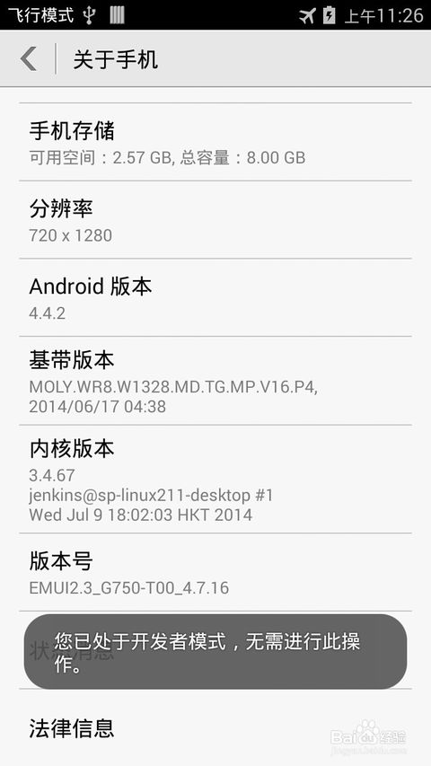
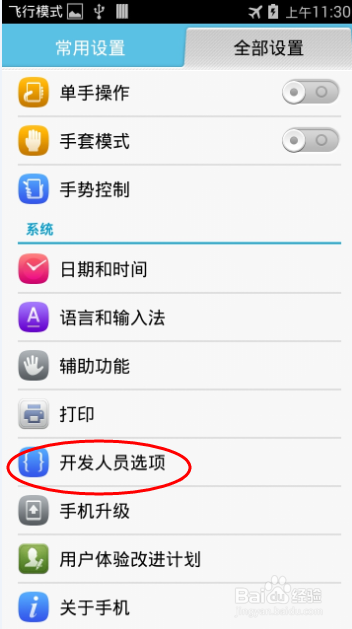
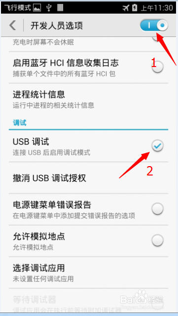

1/6
1.调出开发人员选项，选择USB调试：
1)较新版本的Android系统默认在设置是不显示开发人员选项的，因此进入设置->关于手机->多次点击版本号(一定次数之后设置中出现开发人员选项)；开发人员选择出现之后就无需再设置了。


2/6
2)设置->开发人员选项(开启)->选择USB调试，之后一般会出现允许连接调试和安装调试证书的选项，都选择是。
大部分情况下到这个时候Eclipse开发环境就能够识别手机并可以进行软件的编译下载安装与调试。


3/6
3)USB连接方式需要选择正确，如下图四个选项中，只有选中PC助手方式，才可以被电脑和开发环境识别。

4/6
2.如果还不能识别有的时候是将Android设备与PC机通过USB接口相连时未能正确，可以尝试使用刷机软件如甜椒刷机助手，启动软件后连接Android设备，如果设备没有正确安装或者驱动程序版本不正确，它会自动下载和安装合适的驱动程序


5/6
3.还有就是Manifest.xml中minSdkVersion的的API level不能高于设备上Android系统版本对应的API level。如下图，对应于Android4.4.2对应的API 19，如果minSdkVersion>=20,则Android Device Chooser中无法显示设备

6/6
4.还有Eclipse开发环境通过adb连接调试Android设备，有一些刷机软件也会运行adb程序，造成与开发环境的adb调试器冲突，需要关闭刷机软件，杀死所有adb进程重启开发环境。

-

-
Windows下Android开发不能连接真机进行调试
[重新阅读]